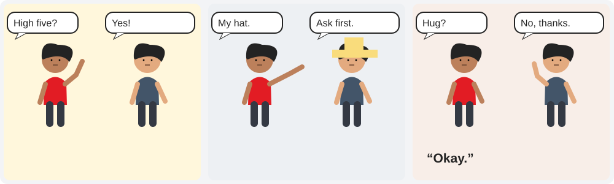
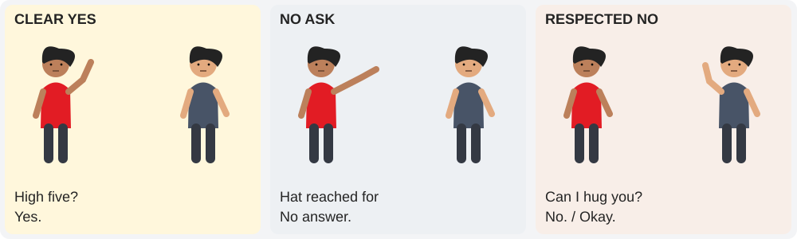
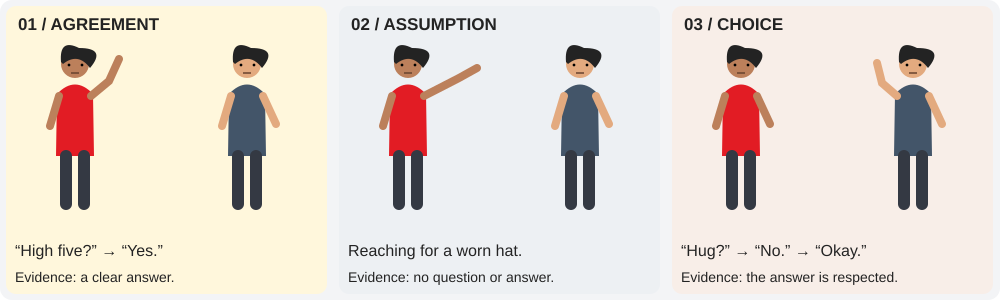
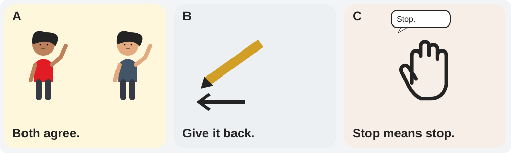
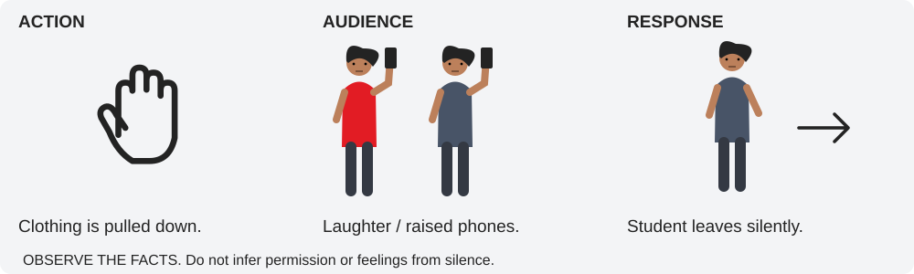
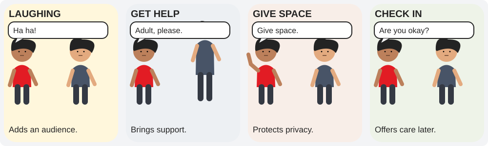
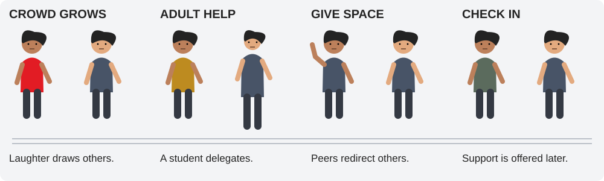
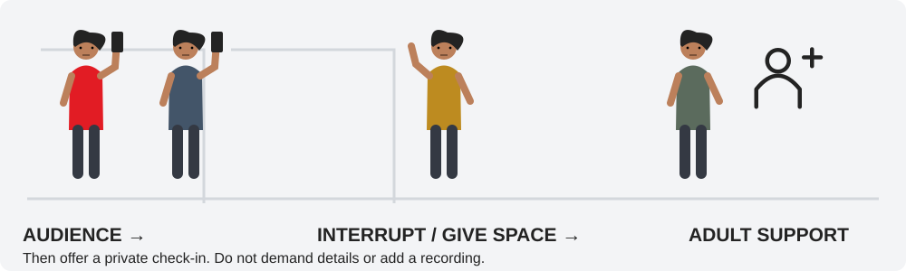
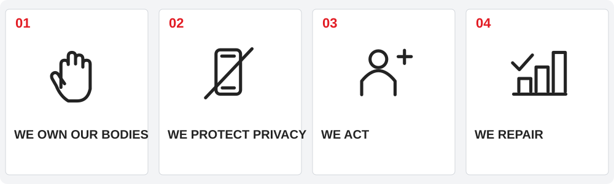
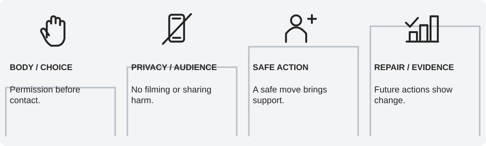

Matchbook Learning · Morning Meeting
Matchbook Learning · Morning MeetingWeekly videos & Do Now – First 5
Use these recurring resources every week. This week’s Connect screens use illustrated fictional scenarios. Use First 5 during arrival; select a brief Relax or Excite excerpt within the two-minute Regulate phase as appropriate.
Start the day
Visuals by day and grade band
K–2 uses large choice cues and spoken responses. Grades 3–5 use structured comparisons and helping choices. Grades 6–8 use evidence, audience effects, and accountability analysis.
My Body. My Boundary.

Ask, wait for an answer, and accept yes, no, or not now.
My Body. My Boundary.

Explain bodily autonomy and identify permission involving bodies, clothing, and belongings.
My Body. My Boundary.

Distinguish observable permission from assumptions based on friendship, history, silence, or laughter.
When A Prank Crosses The Line

Use Asked? Kind? Safe? and stop when a boundary is crossed.
When A Prank Crosses The Line

Use Permission, Dignity, and Safety to analyze a specific action and identify an immediate response.
When A Prank Crosses The Line

Separate intent from impact and sequence an immediate response to a boundary violation.
The Crowd Has Power

Choose a safe helping action and get adult help for a body-safety concern.
The Crowd Has Power

Select one of the 4 Ds and explain why it is safe and useful.
The Crowd Has Power

Choose a safe first intervention and a distinct afterward support action, using the 4 Ds.
Repair Is An Action

Tell the truth about a harmful choice and name an action that changes next time.
Repair Is An Action

Distinguish excuses from ownership and write a specific accountability response.
Repair Is An Action

Construct an accountability statement with behavior, impact, appropriate repair, and evidence of future change.